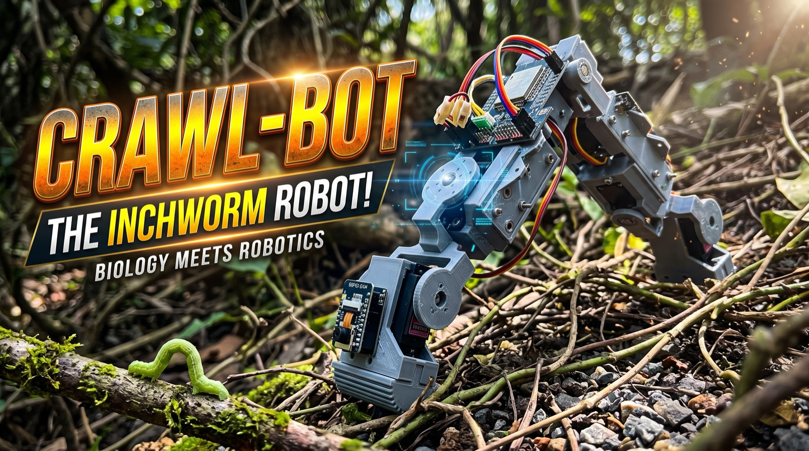

Crawl-Bot
Nature’s masterpiece, reimagined in metal and code.
Deep in the natural world, the humble inchworm conquers tangled vines and narrow twigs with a rhythm both ancient and effortless. It anchors, arches its spine, and extends forward into the unknown.
Crawl-Bot is where billions of years of biological evolution meet next-generation robotics. Instead of wheels that get stuck or heavy tracks that destroy what lies beneath them, it glides forward using nature’s own looping gait. Built with five agile jointed limbs and intelligent vision, it does not merely crawl — it perceives. Smart eyes measure depth and read the surroundings in real time, so Crawl-Bot sees the ground ahead, pauses, turns, and adapts.
- Terrain chameleon
- Swapping between micro-ribbed tread and magnetic grip, it walks across tiles, pushes through rugged gravel, and defies gravity up 45-degree metal slopes.
- Eyes that measure
- Depth-sensing vision builds a live picture of the ground ahead, letting the robot stop, turn and change its footing without being told.
- Born for the unreachable
- Compact, light and resilient, it is engineered for the dark and narrow places people cannot go — inspecting industrial pipelines, or working through rubble on a search and rescue.
Crawl-Bot shows us that the future of robotics does not always come from inventing something entirely new. Sometimes the most breathtaking engineering has been crawling beneath our feet all along.